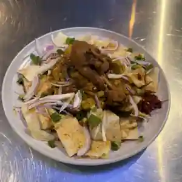
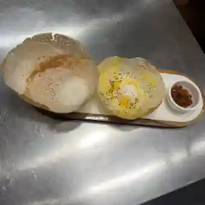
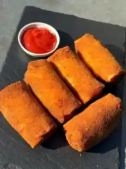
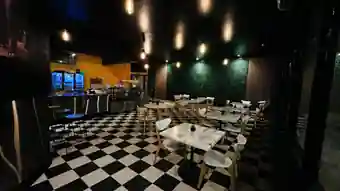

Rice & Curry
Steamed rice with a changing selection of colourful vegetable curries and your choice of protein.
Authentic Sri Lankan flavours, comforting cafe favourites and warm hospitality in Rosetta.
Our food photography shows dishes prepared at 52 South. Come for homestyle rice and curry, hoppers, kottu, short eats and more.

Steamed rice with a changing selection of colourful vegetable curries and your choice of protein.

A Sri Lankan favourite with crisp edges, a soft centre and traditional accompaniments.

Fresh savoury bites for takeaway, sharing, catering or a quick snack.
52 South is our way of sharing the warmth of Sri Lankan food with the community we now call home. Sri Lankan meals are about more than spice — they are about variety, generosity and bringing people together around the table.

At 52 South Cafe & Restaurant, we want every visit to feel easy, generous and full of flavour.
Our kitchen is inspired by the food many Sri Lankan families know from home: curries cooked with layers of spice, rice shared with several accompaniments, crisp-edged hoppers, chopped kottu and savoury short eats made for any time of day.
Alongside those Sri Lankan favourites, 52 South is a neighbourhood cafe and restaurant for Rosetta — a place to stop for a meal, collect takeaway, meet friends or bring the family together.
Sri Lanka is an island of tea-covered hills, tropical coastlines, wildlife, spices and deeply regional food traditions. That landscape is part of the story behind the flavours we love to cook.
Sri Lankan scenery is licensed cultural imagery. Food and venue photographs on this site are genuine 52 South photographs.
A welcoming space for birthdays, family gatherings and private celebrations, with food packages available to suit your function.
Dine in, pick up takeaway or order delivery online. We are at 52 Marys Hope Road, Rosetta.
| Tuesday – Sunday | 9:00 am – 8:00 pm |
| Monday | Call to confirm |
Hours may change on public holidays, maintenance days or for private functions.